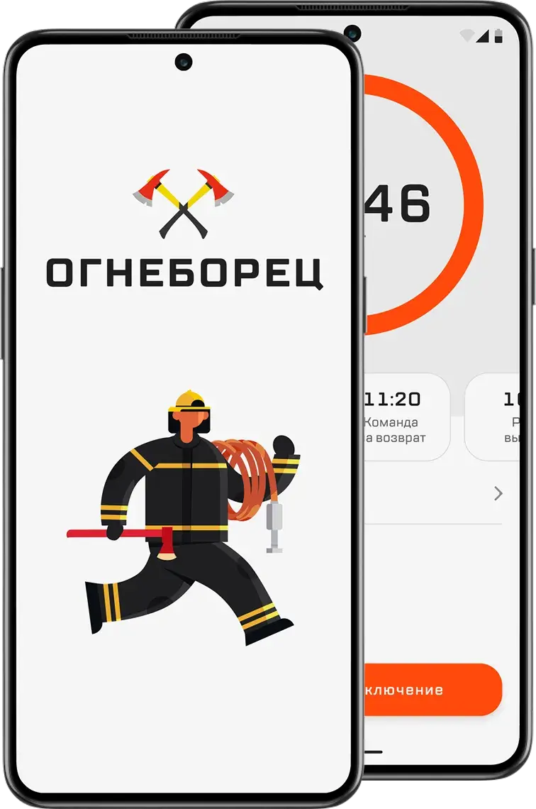
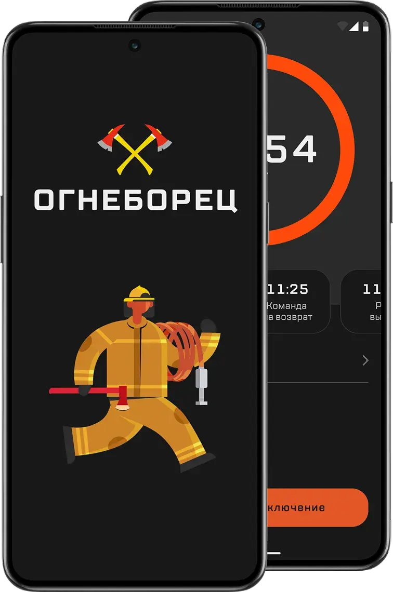

Firefighter
A mobile app for firefighters that tracks cylinder pressure and the time to head back to safety


By hand
6min
on average in drills, with a board and a calculator
In the app
47sec
nearly 8 times faster
Context and problem
Manual math takes time and leads to mistakes
The idea came from Yuri Konovalov, a shift commander. Yuri goes out to fires himself and coordinates the crew. He saw how long the entry control officer spent doing the math by hand and suggested building them a calculator.
Who entry control officers are. The officer is responsible for firefighters’ safety. They watch cylinder pressure, work out the turnaround time, and keep an eye on the whole scene.
The math happens on a cardboard board with a table. Every number is written down and compared by hand.
Conditions change, and smoke can get heavier. Then the officer reworks the numbers with formulas. If firefighters don’t leave the danger zone in time, their cylinders won’t hold enough for the way back.
Goal. Automate the math so the officer spends less time on it and makes fewer mistakes. The app works out when firefighters should leave the danger zone, based on current cylinder pressure and how conditions at the fire change.
Research
Officers count by hand, and each keeps records their own way
In 2022, no mobile app calculated turnaround time and logged the data from every entry on its own.
I wanted to see how officers do the math and what gets in the way. So I talked to three of them, with 8, 11, and 12 years on the job.
1. How do you start work at a fire?
Andrey, 12 years on the job
When we arrive, we move up to the fire. I record each firefighter’s cylinder pressure and tell the commander how much of the supply they can use
Igor, 8 years on the job
At the edge of the IDLH (immediately dangerous to life or health) area, I write down the starting cylinder pressure and pass it to the crew leader
Sergey, 11 years on the job
Before we start fighting the fire, I record cylinder pressure, work out when the crew has to leave the danger zone, and pass it to the crew leader
2. How do you calculate the crew’s working time?
Andrey, 12 years on the job
I calculate the turnaround time from the starting pressure before they go into the IDLH area. While they’re fighting the fire, I recalculate the pressure and turnaround time. After they come out, I write down the remaining pressure and exit time
Igor, 8 years on the job
With formulas, before the entry. While they work, I recalculate the time left based on consumption
Sergey, 11 years on the job
I use the standard formulas before we start and recalculate as conditions change
3. What exactly do you use to calculate and record data?
Andrey, 12 years on the job
The board. I do the math on a calculator
Igor, 8 years on the job
Sometimes I make notes on my phone if I can’t write things down right away
Sergey, 11 years on the job
The board or a notebook
4. Why this method?
Andrey, 12 years on the job
The board is always at hand
Igor, 8 years on the job
Habit. And I can quickly look through old records
Sergey, 11 years on the job
It’s always been done this way. Nobody tried to change it
5. What do you like about how you work now?
Andrey, 12 years on the job
Hard to say, I’m just used to the board
Igor, 8 years on the job
I can quickly fix my phone notes if I wrote something down wrong
Sergey, 11 years on the job
I don’t depend on charging or internet
6. What are the downsides?
Andrey, 12 years on the job
I can make a mistake, especially in a rush and when numbers need a quick recalculation. Then I have to fill everything in again or make corrections
Igor, 8 years on the job
Counting by hand. Everything is in different places, and copying it over takes time
Sergey, 11 years on the job
Sometimes the notebook gets lost or dirty, and then I have to remember the numbers. Double-checking takes time too
7. Why don’t you use digital tools?
Andrey, 12 years on the job
There’s no centralized program
Igor, 8 years on the job
I use my phone for notes
Sergey, 11 years on the job
There’s no single standard. Everyone does it their own way
8. What’s hard about calculations during an entry?
Andrey, 12 years on the job
When conditions change, I have to recalculate on the fly. I do it on a calculator, and it’s not as fast as I’d like
Igor, 8 years on the job
A mistake in the math can affect the crew’s safety. For example, in the remaining working time
Sergey, 11 years on the job
Sometimes cylinder pressure drops faster, nobody notices in time, and recalculating quickly is pretty hard
9. How often do you have to recalculate?
Andrey, 12 years on the job
On a tough fire, almost every call
Igor, 8 years on the job
Every 10–15 minutes on average, if conditions change
Sergey, 11 years on the job
Sometimes 2–3 times during one entry
10. How long do calculations and records take?
Andrey, 12 years on the job
If nothing changes, about 5–7 minutes
Igor, 8 years on the job
Up to 10 minutes if I’m recalculating something
Sergey, 11 years on the job
When the log is a mess, fixing it can take 10–15 minutes
From their answers, I put together the officer’s steps during an entry.
The officer moves up to the edge of the IDLH area
Records the starting cylinder pressure
Calculates the turnaround time, total protection time, and total working time
Passes the numbers to the crew leader
Watches cylinder pressure and calls the crew out when it gets critical
Records the results in the BA log
The interviews led to three takeaways.
-
Recalculating on the fly takes time, and mistakes can happen
A calculation with no changes takes 5–7 minutes, and up to 10 with recalculation. One entry can need 2–3 recalculations, and a faster pressure drop can go unnoticed.
-
There’s no shared method, and records are scattered
Everyone writes things down their own way, on the board, in a notebook, or on a phone. A notebook sometimes gets lost or dirty, and for the report the data has to be copied over again.
-
The board is familiar and always at hand
It doesn’t depend on charging or internet. It’s always been done this way, and nobody tried to change it.
Design
Enter data fast and see the time without extra steps
The app works offline.
From the takeaways, I identified the use cases and sketched a draft user flow.
- Start. Entering cylinder data and recording the starting values.
- Monitoring. The app calculates turnaround time and tracks cylinder pressure on its own.
- Emergency exit. If cylinder pressure drops to a critical level, the officer gets a warning and tells the crew to get out now.
Testing
Firefighters tried the app out in drills
We handed an interim version to the fire station. Firefighters tested it themselves, in the field, during training exercises. I collected their feedback.
01 / 02
The feedback led us to rework four things.
Adding crew members. Typing in full names got tedious once the app was in regular use. We added saved shifts, so the officer picks one instead of adding everyone again.
Formulas. A few calculations used the wrong formulas. Because of that, the turnaround call and working time came out wrong. We fixed them.
Timer. Officers look at total time first and turnaround time right after. We made the total time timer bigger and put turnaround time first below it.
Reports. The officer or someone from the crew fills in the firefighting report. Without the app, they’d check their phone and copy the numbers into a table by hand. The app already has all the data, so it fills in the standard form itself.
Final version
It started as a calculator and grew with feedback
The total time timer fills most of the screen, so it’s visible at a glance. When time runs out, the app sounds an alarm and the interface changes color.
Crew at work
Time’s up
Entry. Shifts can be saved ahead of time, so nobody fills them in right before going in.
Events. The officer marks events during the fire, and the turnaround time updates right away.
Report. After the fire, the app puts together an entry report with all the readings and keeps a history of every entry.
Result
Calculation time dropped from 6 minutes to 47 seconds
Before
6min
manual calculation
After
47sec
calculation in the app
Now the officer gets the numbers from the app instead of working them out by hand. There are fewer mistakes, since the app does the counting, not a person with a calculator. The report comes out already filled in.
What’s next. Quarterly reports in digital form, a record of the breathing apparatus each unit has in service, and a map of fire hydrants.